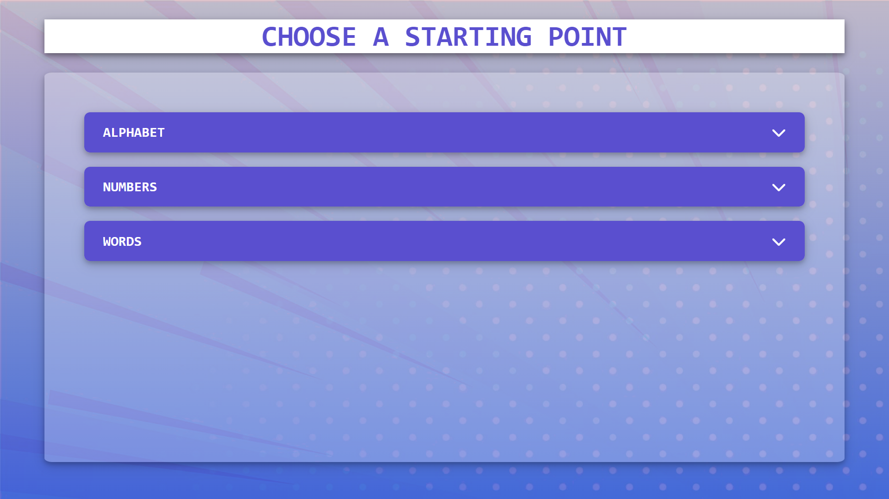
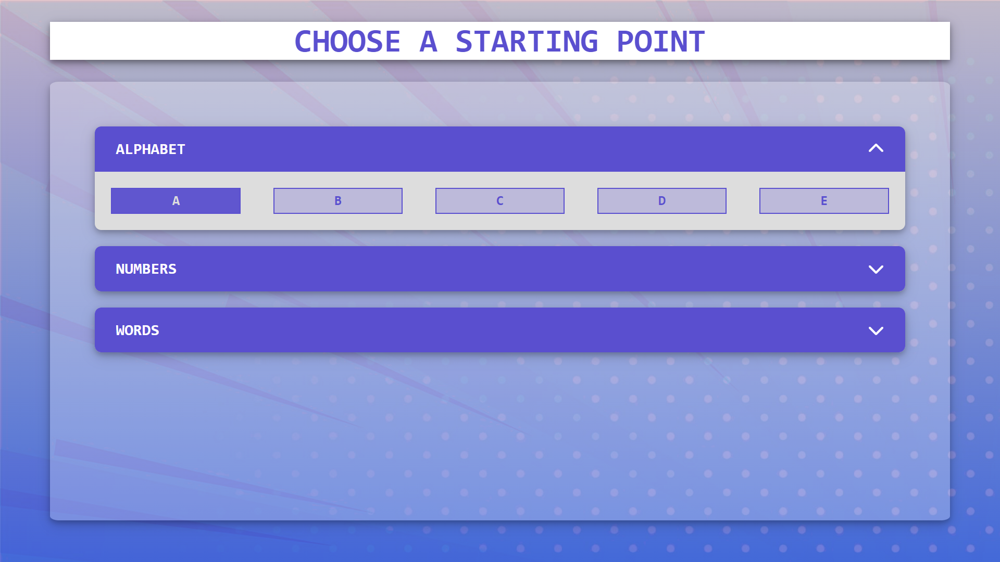
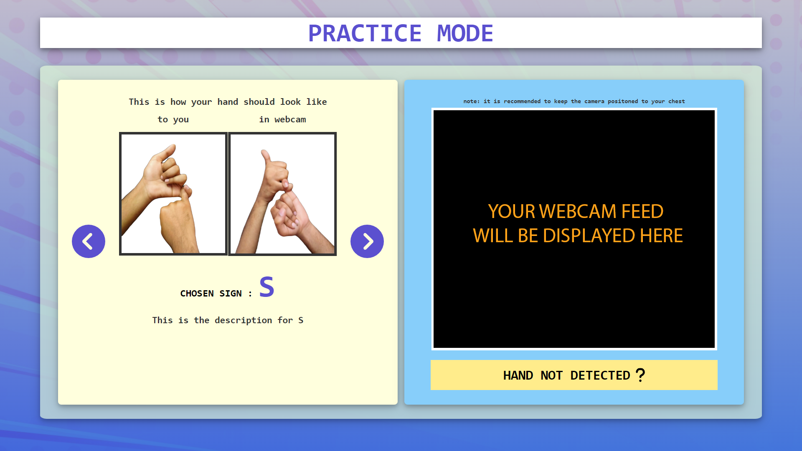
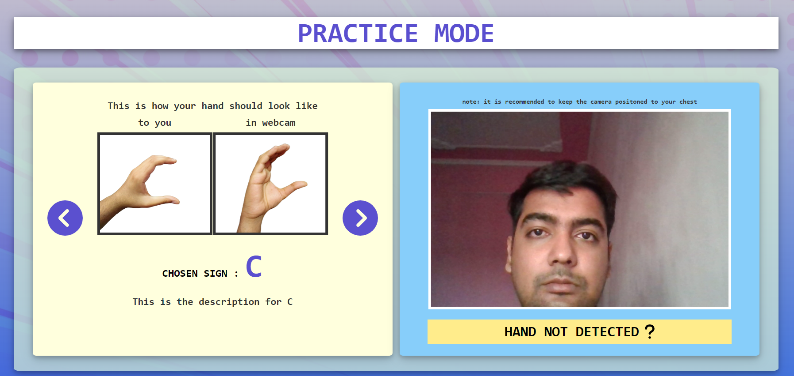

click on ‘Start Learning’, Selection page should load looking like this picture below. This page shows multiple categories of sign gestures to choose from.
When you click on a category, a sub-menu expands down containing various gesture choices belonging to that category. Choose one from these choices by clicking on the respective button to open up the next page.
Now, the Practice Page Should be opened with the details of that gesture you chose on the left, including its description and images of the gesture. On the right,your webcam feed should be displayed. Now, using the reference details, make the gesture you chose in front of the webcam.
When you make a gesture, the AI will tell you whether you are making the correct gesture or not.
Also, when your Hand is not present in front of the Webcam, the sign cannot be comprehended by the application’s AI. In such a case, the result area shows a message ‘Hand Not Detected’, until your hand is in front of the webcam.
You can toggle between different gestures of the category you chose by using the previous and next buttons or choose to go back to the previous menu using, you guessed it, the BACK button. And now that you know the basics...